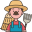

Rizora
La platforme qui connecte agriculteurs, transformateurs et acheteurs pour
digitaliser et fiabiliser la filière riz au Togo.
voir le dashboard
3
Parcelles suivies 72%
Humidité moyenne de l'air 4.8 t/ha
Rendement estimé
Parcelles suivies 72%
Humidité moyenne de l'air 4.8 t/ha
Rendement estimé
Un écosystème digital pour la filière riz

Agriculteurs
Suivent leurs parcelles et déclarent leur production.
Transformateurs
Décortiquent et étuvent le riz local.
Acheteurs
Achètent directement sans intermédiaire spéculatif.
Voir le réseau en détail